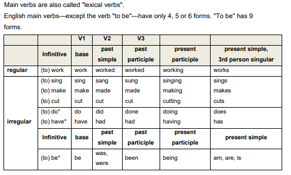
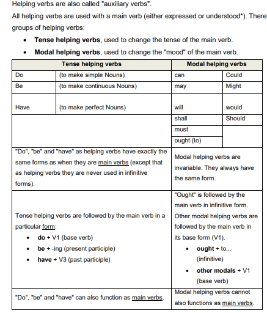

<!DOCTYPE html>
<html lang="en">

<head>
  <meta charset="utf-8">
  <meta content="width=device-width, initial-scale=1.0" name="viewport">

  <title>Verbs</title>
  <meta content="" name="description">
  <meta content="" name="keywords">


  <!-- Google Fonts -->
  <link
    href="https://fonts.googleapis.com/css?family=Open+Sans:300,300i,400,400i,600,600i,700,700i|Raleway:300,300i,400,400i,500,500i,600,600i,700,700i|Poppins:300,300i,400,400i,500,500i,600,600i,700,700i"
    rel="stylesheet">

  <!-- Vendor CSS Files -->
  <link href="assets/vendor/aos/aos.css" rel="stylesheet">
  <link href="assets/vendor/bootstrap/css/bootstrap.min.css" rel="stylesheet">
  <link href="assets/vendor/bootstrap-icons/bootstrap-icons.css" rel="stylesheet">
  <link href="assets/vendor/boxicons/css/boxicons.min.css" rel="stylesheet">
  <link href="assets/vendor/glightbox/css/glightbox.min.css" rel="stylesheet">
  <link href="assets/vendor/remixicon/remixicon.css" rel="stylesheet">
  <link href="assets/vendor/swiper/swiper-bundle.min.css" rel="stylesheet">

  <!-- Template Main CSS File -->
  <link href="assets/css/style.css" rel="stylesheet">

  <!-- =======================================================
  * Template Name: OnePage
  * Updated: Mar 10 2023 with Bootstrap v5.2.3
  * Template URL: https://bootstrapmade.com/onepage-multipurpose-bootstrap-template/
  * Author: BootstrapMade.com
  * License: https://bootstrapmade.com/license/
  ======================================================== -->
</head>

<body>

  <!-- ======= Header ======= -->
  <header id="header" class="fixed-top">
    <div class="container d-flex align-items-center justify-content-between">

      <h1 class="logo"><a href="index.html">Learn English is Fun:)</a></h1>
      <!-- Uncomment below if you prefer to use an image logo -->
      <!-- <a href="index.html" class="logo"></a>-->

      <nav id="navbar" class="navbar">
        <ul>
          <li><a class="nav-link scrollto active" href="index.html">Home</a></li>

          <li class="dropdown"><a href="#"><span>Grammar</span> <i class="bi bi-chevron-down"></i></a>
            <ul>
              <li class="dropdown"><a href="#"><span>Part Of Speech</span> <i class="bi bi-chevron-right"></i></a>
                <ul>
                  <li><a href="noun.html"> Nouns</a></li>
                  <li><a href="pronouns.html"> Pronouns</a></li>
                  <li><a href="verb.html"> Verbs</a></li>
                  <li><a href="adjective.html"> Adjectives</a></li>
                  <li><a href="adverb.html"> Adverbs</a></li>
                  <li><a href="preposition.html"> Prepositions</a></li>
                  <li><a href="tenses.html"> Tenses</a></li>

                </ul>
              </li>
              <li class="dropdown"><a href="#"><span>Sentences</span> <i class="bi bi-chevron-right"></i></a>
                <ul>
                  <li><a href="sentences.html">sentence</a></li>
                  <li><a href="phrase.html">Phrases</a></li>
                  <li><a href="clause.html">Clausess</a></li>
                  <li><a href="conditional.html">Conditional Sentences</a></li>
                  <li><a href="directindirect.html"> Direct and indirect speech</a></li>
                </ul>
              </li>
            </ul>
          </li>
          <li><a class="nav-link scrollto" href="#footer">About</a></li>
          <li><a class="getstarted scrollto" href="index.html">Get Started</a></li>
        </ul>
        <i class="bi bi-list mobile-nav-toggle"></i>
      </nav><!-- .navbar -->


    </div>
  </header><!-- End Header -->

  <section>
    <div class="jumbotron jumbotron-fluid">
      <div class="container">
        <h1 class="display-4">English Pronouns</h1>
        <p class="lead">The verb is king in English. The shortest sentence contains a verb. You can make a oneword
          sentence with a verb, for example: Stop! You cannot make a one-word sentence with
          any other type of word. Verbs are sometimes described as "action words". This is partly true.
        </p>
        <p>A verb always has a subject. In the sentence "John speaks English", (=John is the subject
          and speaks is the verb.) In simple terms, therefore, we can say that verbs are words that tell
          us what a subject does or is; they describe:
          <li>action (Ram plays football)</li>
          <li> state (Ram is English)</li>
        </p>
<br>
<h3>Auxiliary Verbs</h3>
<p>These are verbs that have no real meaning. They are necessary for the grammatical 
  structure of the sentence, but they do not tell us very much alone. For example, will, 
  would, may are helping verbs. We usually use helping verbs with main verbs. They 
  "help" the main verb.</p> <br>

        <h3>Main verb</h3>
        <p>These are verbs that really mean something, they tell us something. For example, 
          love, make, work are main verbs.</p>
        <h4>Transitive and intransitive verbs</h4>
        <p>Transitive verbs can take a direct object (subject + verb + object). Intransitive verbs do not
          take a direct object (subject + verb [+ indirect object]). Many verbs can be transitive or
          intransitive.
        </p><br>
        <p>A Transitive:</p>
        <li>He speaks English.</li>
        <li>We are watching TV. </li>
        <li> saw an elephant.</li> <br>
        <p>B ntransitive: </p>
        <li>He has arrived</li>
        <li> She speaks fast. </li>
        <li> John goes to school. </li> <br>
        <h4> Linking verbs</h4>
        <p>Linking verbs are always intransitive. A linking verb does not have much meaning in itself. It
          "links" the subject to what is said about the subject. Usually, a linking verb shows equality (=)
          or a change to a different state or place (>).</p>
        <li>Mary is a teacher. (Mary = teacher)</li>
        <li>Tara is beautiful. (Tara = beautiful)</li>
        <li>That sounds interesting. (that = interesting)</li>
        <li>The sky became dark. (the sky > dark) </li>
        <li>The bread has gone bad. (bread > bad)</li><br>

        <h4> Regular and irregular verbs:</h4>
        <p>This is more a question of vocabulary than of grammar. The only real difference between
          regular and irregular verbs is that they have different endings for their past tense and past
          participle forms. For regular verbs, the past tense ending and past participle ending is
          always the same: -ed. For irregular verbs, the past tense ending and the past participle
          ending is variable, so it is necessary to learn them by heart.</p>
        <p><b> A. Regular verbs:</b> base, past tense, and past participl</p>
        <li>buy, bought, bought</li>
        <li> cut, cut, cut</li>
        <p><b> B ntransitive:</b> base, past tense, and past participle</p>
        <li>buy, bought, bought</li>
        <li> cut, cut, cut</li>
        <li> do, did, done </li>

        <h3>form of main verbs</h3>
         <br>
        <h3>form of main verbs</h3>
         
      </div>

  </section>

  <footer id="footer">

    <div class="footer-top">
      <div class="container">
        <div class="row">

          

    <div class="container d-md-flex py-4">

      <div class="me-md-auto text-center text-md-start">
        <div class="copyright">
          &copy; Copyright <strong><span>Aron</span></strong>. All Rights Reserved
        </div>
        <div class="credits">
          <!-- All the links in the footer should remain intact. -->
          <!-- You can delete the links only if you purchased the pro version. -->
          <!-- Licensing information: https://bootstrapmade.com/license/ -->
          <!-- Purchase the pro version with working PHP/AJAX contact form: https://bootstrapmade.com/onepage-multipurpose-bootstrap-template/ -->
        </div>
      </div>
      <div class="social-links text-center text-md-right pt-3 pt-md-0">
        <a href="#" class="twitter"><i class="bx bxl-twitter"></i></a>
        <a href="#" class="facebook"><i class="bx bxl-facebook"></i></a>
        <a href="#" class="instagram"><i class="bx bxl-instagram"></i></a>
        <a href="#" class="google-plus"><i class="bx bxl-skype"></i></a>
        <a href="#" class="linkedin"><i class="bx bxl-linkedin"></i></a>
      </div>
    </div>
  </footer><!-- End Footer -->

  <div id="preloader"></div>
  <a href="#" class="back-to-top d-flex align-items-center justify-content-center"><i
      class="bi bi-arrow-up-short"></i></a>

  <!-- Vendor JS Files -->
  <script src="assets/vendor/purecounter/purecounter_vanilla.js"></script>
  <script src="assets/vendor/aos/aos.js"></script>
  <script src="assets/vendor/bootstrap/js/bootstrap.bundle.min.js"></script>
  <script src="assets/vendor/glightbox/js/glightbox.min.js"></script>
  <script src="assets/vendor/isotope-layout/isotope.pkgd.min.js"></script>
  <script src="assets/vendor/swiper/swiper-bundle.min.js"></script>
  <script src="assets/vendor/php-email-form/validate.js"></script>

  <!-- Template Main JS File -->
  <script src="assets/js/main.js"></script>

</body>

</html>